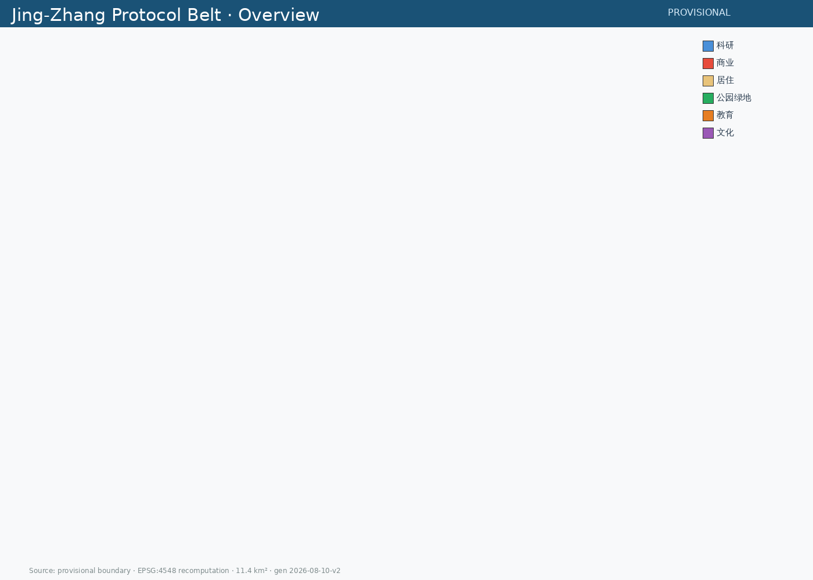
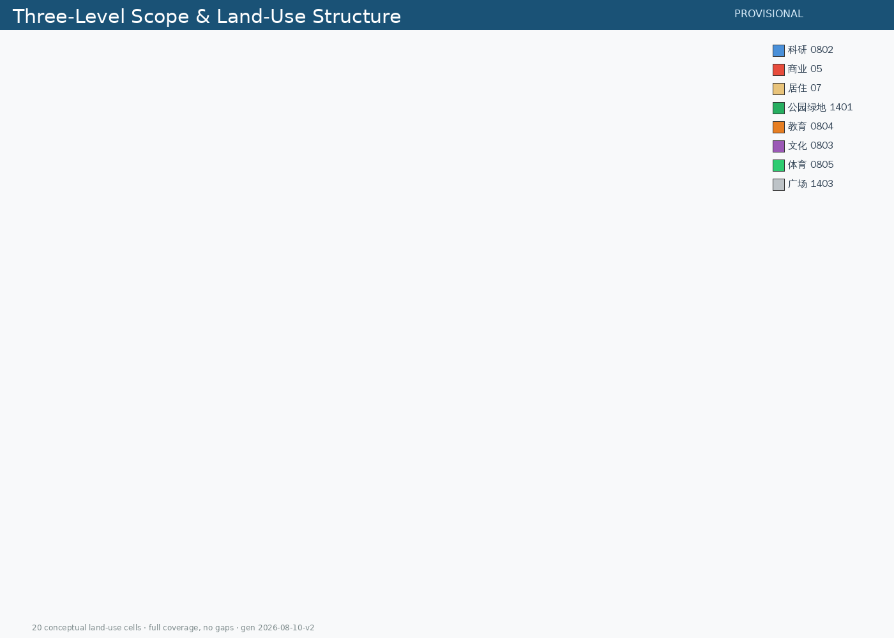
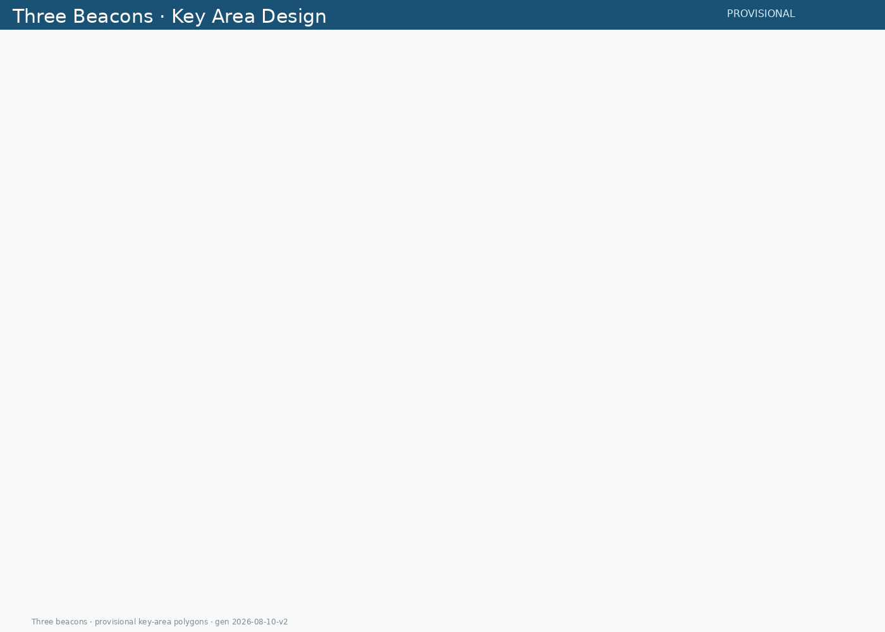
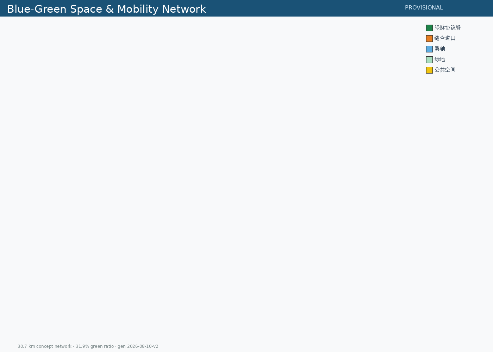
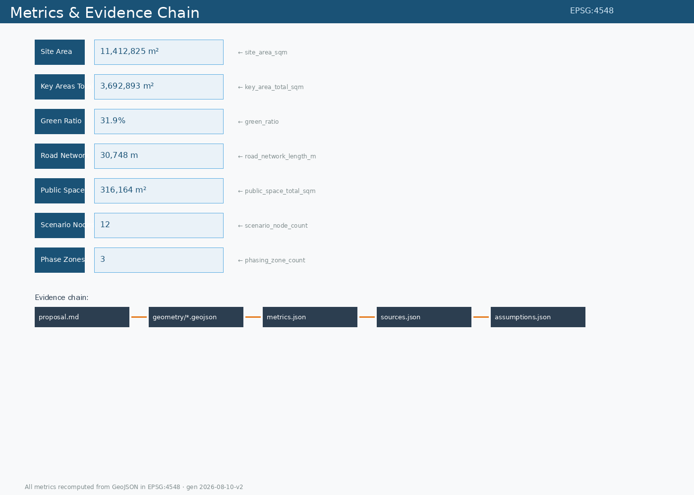

Writing AI Urban Design as an Auditable Public Protocol
PROVISIONAL boundaryEPSG:4548 recomputationYoumu76 · Yeche Hermes Agent
official_boundary=false); it is not an official redline or precise area basis. Full recalculation is required when official polygons are released. This proposal is open co-creation concept material — not a substitute for statutory planning or an approved government conclusion.
Core proposition: Mainstream proposals ask "what can AI bring to this belt". This proposal inverts the question — "how does this belt constrain AI". The Jing-Zhang Railway was China's first trunk line built to indigenous standards; the Jing-Zhang Protocol Belt should become the first city-scale AI public protocol laboratory.
Spatial structure: One spine (9km green protocol ridge) · Three beacons (Zhongzhiyuan TRUST / Origin OPEN / Dazhongsi COEXIST) · Two wings (Zhongguancun technology-service / Xiaoyuehe scenario-empowerment) · Five stitch crossings · Twelve protocol scenario nodes.
Meta-symbol: Zhan Tianyou's chevron (人) → switchback = rollback-able; protocol ring = auditable.


Twenty conceptual land-use cells with seamless full-boundary coverage: research (Zhongzhiyuan west/main, Origin open-source community), park green (green ridge in five segments), commercial (Dazhongsi consumption blocks), residential (south/middle/Origin talent housing), education (Origin campus-adjacent), cultural (Protocol Culture Center), sports (AI vitality sports park), plaza (Zhongzhiyuan open plaza).

Full-stack validation line + switchback governance gates; experiment clusters like marshalling sidings; transparent test interface. Protocol action: every validation stage emits a validation protocol report.
Campus-adjacent sourcing and open-source conversion; 80-120m blocks "west conversion, east living, axis open-source". Protocol action: release plaza hosts Jing-Zhang Open Protocol signing ceremonies.
Four-quadrant station-city living room; AI-native consumption and business. Protocol action: coexistence observation points publish regular coexistence reports.

Green ratio ~31.9% (3.64 km²); conceptual road network ~30.7 km: green protocol spine + five stitch crossings (east-west stitching) + two wing axes.
| ID | Scenario | Spatial node | Protocol tier |
|---|---|---|---|
| P-01 | Autonomous delivery slow corridor | Green ridge south | rollback pilot |
| P-02 | City AI evaluation field | Zhongzhiyuan | full-stack validation |
| P-03 | Open-source release plaza | Origin | open protocol |
| P-04 | Enterprise Copilot routing | Dazhongsi | human review |
| P-05 | AI cultural guide "protocol commentary line" | green ridge | data minimization |
| P-06 | AI+health service navigation | Origin | human review |
| P-07 | AI+education companion blocks | Origin | data minimization |
| P-08 | AI-native consumption blocks | Dazhongsi | benefit sharing |
| P-09 | Public-safety operations review points | Zhongzhiyuan | full traceability |
| P-10 | Human-AI coexistence observation | Dazhongsi | human review |
| P-11 | Data feedback stations | Xiaoyuehe wing | benefit sharing |
| P-12 | Global developer protocol co-creation station | Zhongguancun wing | open protocol |

Evidence chain: proposal.md → geometry/*.geojson → metrics.json → sources.json → assumptions.json. All metrics recomputed from GeoJSON in EPSG:4548.
Round one (1909): China's first trunk line to indigenous standards. Round two (2026+): China's first city-scale AI public protocol laboratory. Rails were 20th-century infrastructure; protocols are 21st-century infrastructure.
| Phase | Scope | Focus |
|---|---|---|
| I | South beacon start | Dazhongsi + south green ridge + protocol stele |
| II | Middle growth | Origin + stitch crossings |
| III | North full-stack | Zhongzhiyuan + wing services |